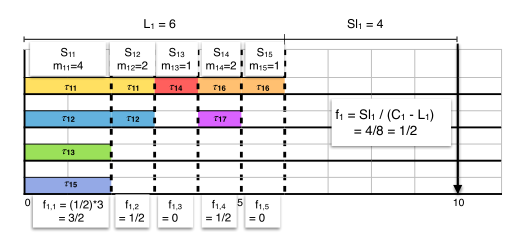

论文阅读
《A Stretching Algorithm for Parallel Real-time DAG Tasks on Multiprocessor Systems》
本篇论文的算法属于静态调度算法，预先知道DAG图，然后根据DAG图转换为MTS。再在MTS的基础上对整个任务进行拉伸。也就是本文提出的全局拉伸算法。
本文的贡献
- 提出了一种适用于DAG任务模型的拉伸算法。该算法是DAG调度过程的前一步（静态调度）。将并行的DAG转换为独立的舒徐线程，其他无法进行转换，或者转换之后超出时间的则在其他处理器并行执行。
- 对于在m个相同处理器平台上执行的由n个DAG任务组成的任务集合，作者证明了扩展任务的全局EDF调度具有相同的资源扩充界限:$\frac{3+\sqrt{5}}{2}$，在$n<\varphi*m^{'}$，其中$m^{'}<=m$，是除了主线程之外的其他线程的数量，而$\varphi$是黄金分割率。
文章中参数的含义
| 参数名 | 含义 |
|---|---|
| ${t_{i,j} | 1<=j<=n_i}$ |
| $G_i$ | 子任务之间的依赖关系 |
| $O_i$ | DAG任务的偏移量 |
| $D_i$ | DAG任务的相对截至时间 |
| $T_i$ | 连续任务之间的间隔时间，一般看作$T_i=D_i$ |
| $C_{i,j}$ | 单个子任务任务的最坏执行情况所用的时间 |
| $C_i = \sum_{j=1}^{n_i}C_{i,j}$ | 单个DAG任务的最坏执行情况所用的时间 |
| $U_i=\frac{C_i}{T_i}$ | 利用率，最坏运行情况在限制时间内多少 |
| $Li$ | DAG图中所有路径中执行时间最长的路径所用的时间 |
| $Sl_i = D_i-L_i$ | 执行最长路径之后剩余的时间。 |
| $S_i$ | 转换为MTS形式之后，段的总数。 |
| $e_{i,j}$ | 每个段的最长执行时间，按这个段中所有子任务最短的计算。 |
| $m_{i,j}$ | 每个段中任务的数量 |
| $MTS L_i = \sum_{j=1}^{s_i}e_{i,j}$ | MTS模式下的关键路径的长度 |
| $MTSC_i = \sum_{j=1}^{s_i}m_{i,j}*e_{i,j}$ | MTS模式下的最坏情况执行时间 |
| $ f_i = \frac{Sl_i}{C_i-L_i}=\frac{D_i-L_i}{C_i-L_i}<=\frac{D_i}{C_i}<1 $ | 分发参数 |
| $f_{i,j} = f_i*(m_{i,j}-1)$ | 要添加到主线程的段$S_{i,j}$中的线程数 |
| $D_{i,j} = (1+f_{i,j})*e_{i,j}$ | 每段$S_{i,j}$的中间截止日期$D_{i,j}$ |
| $O_{i,j}=\sum_{k=1}^{j-1}D_{i,k}$ | 每个段的偏移量 |
任务模型
文章提出的任务模型就是DAG集合，其中每个DAG任务使用$({t_{i,j}|1<=j<=n_i},G_i,O_i,D_i)$来进行表示，其中$t_{i,j}$表示任务$T_i$的每个子任务，而$G_i$表示各个子任务之间的依赖关系，$O_i$表示整个任务的偏移量，而$D_i$表示任务的相对截至时间。
任务集如果想在m个处理器使用任何调度算法进行调度，则需要满足下面两个条件。
$$
\forall{t_i}\in{T},L_i<D_i \
U(T) = \sum_{i=1}^{n}U_i = \sum_{i=1}^{n}\frac{C_i}{T_i}<=m
$$
DAG拉伸算法
我们结合文中给出的示例来说明文章中提出的算法。
图中我们可以获得的信息就是路径总共有六条可执行路径，分别是{1，4，6}，{1，4，7}，{2，4，6}，{2，4，7}，{3，6}，{5，7}。则L = 6，也就是主路径的情况。
这是转换为MTS之后的形式。我们根据依赖关系和主路径，将子任务转换为MTS形式。其中如果DAG图的利用率小于1，证明整个任务可以在一个处理器中顺序执行，所以只有当利用率大于1的时候才会将DAG图转换为MTS形式。从图中我们可以看出总共有5段，每段的任务数量不相同。如第一段，由于任务3，5的最坏执行时间都是2，所以第一段的$e_{i,j}$也为2。后续同理。

转换为MTS之后，最重要的就是计算每个段有几个线程可以加入到主线程中，也就是$f_{i,j}$的计算。
转换结果如上图。整个算法流程如此，所以整个来说，这个就是一个静态的调度算法。